Avatar maker: pick a cosmetic set
8 bee colours and 8 cosmetics, chosen with arrows (skribbl's interaction pattern only; the bees are the app's own mascot drawing). Colour 0 with no cosmetic IS the mascot, byte for byte. The colours are fixed; the one choice left is the cosmetic set. Screenshots: dark and light, desktop (1280 px) and phone (390 px).
The choice
Playful
None, Crown, Party hat, Flower, Sunglasses, Headphones, Bow tie, Honey pot.
- Keeps two legacy accessories byte for byte (the queen's crown, the blossom).
- Every legacy avatar maps to its own distinct bee.
- Bolder shapes: each reads at 30 px.
Spelling-themed
None, Graduation cap, Pencil, Reading glasses, Quill, Book, Letter block, Headphones.
- On theme for a spelling game.
- Reading glasses and the quill are the subtlest at 30 px.
- No match for the hive and honey avatars:
honeybecomes the plain honey bee.
All 8 cosmetics, each set
Playful
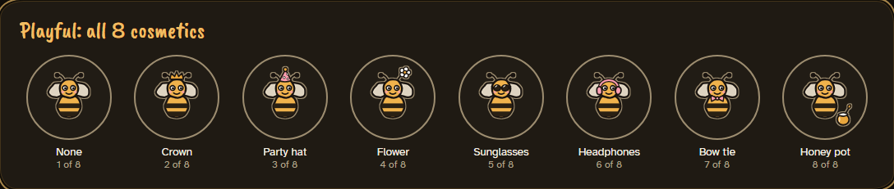
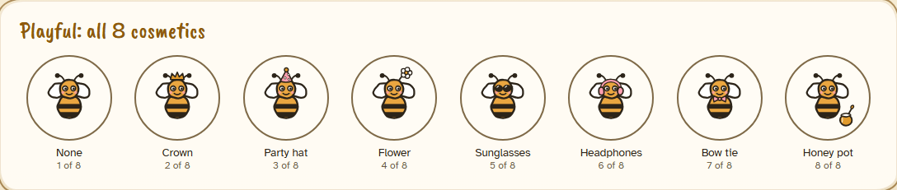
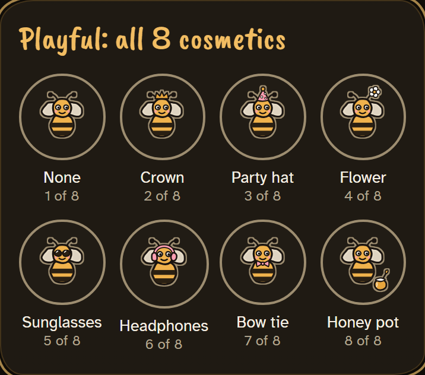
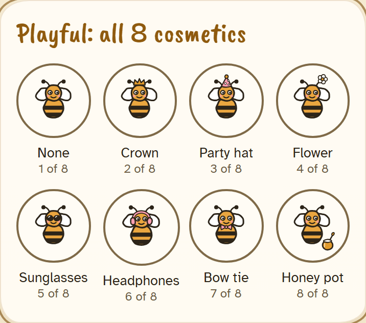
Spelling-themed
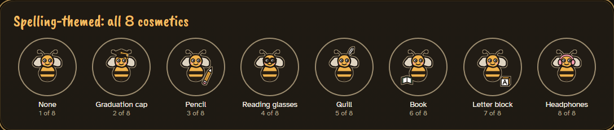
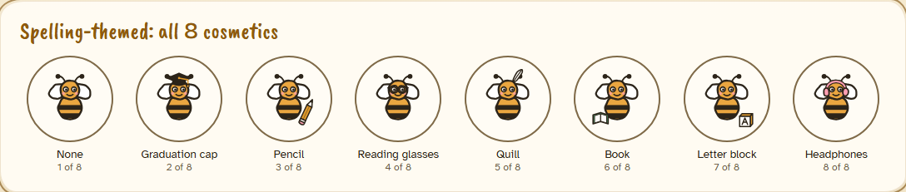
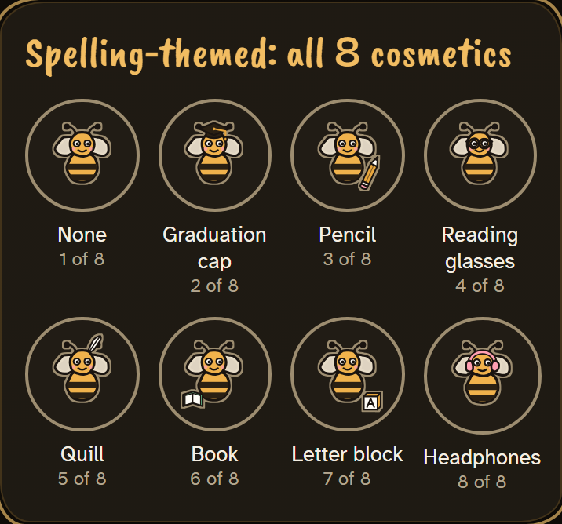
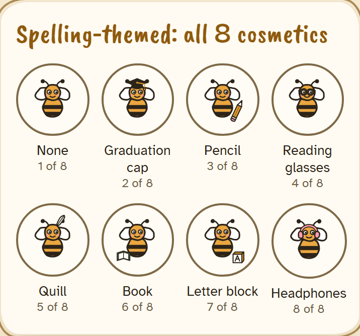
The maker
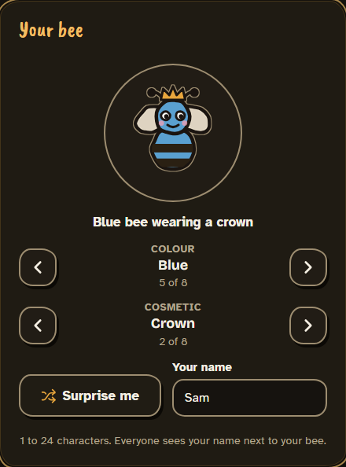
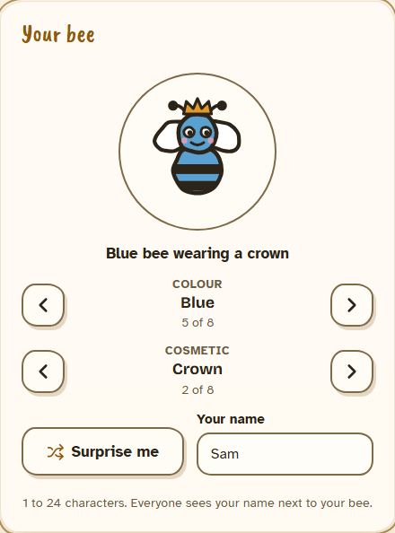
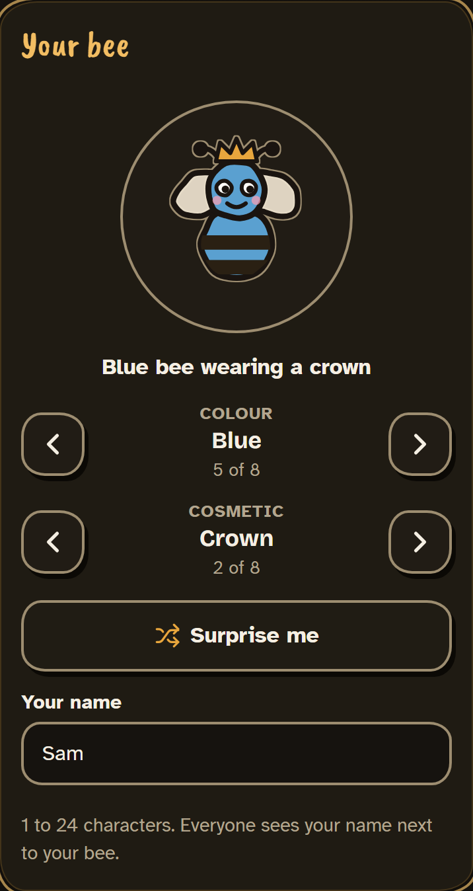
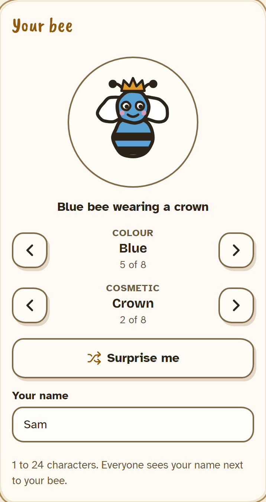
All 8 colours
Honey, Red, Rose, Purple, Blue, Aqua, Green, Grey. Every pair is at least 11.7 CIEDE2000 apart under normal vision and simulated protanopia, deuteranopia and tritanopia (README).
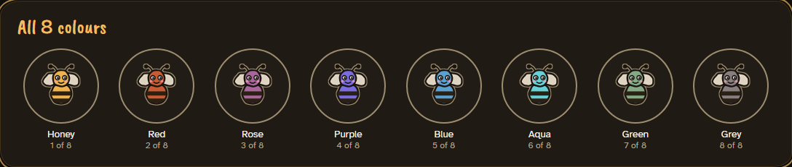
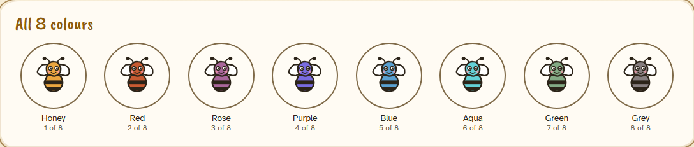
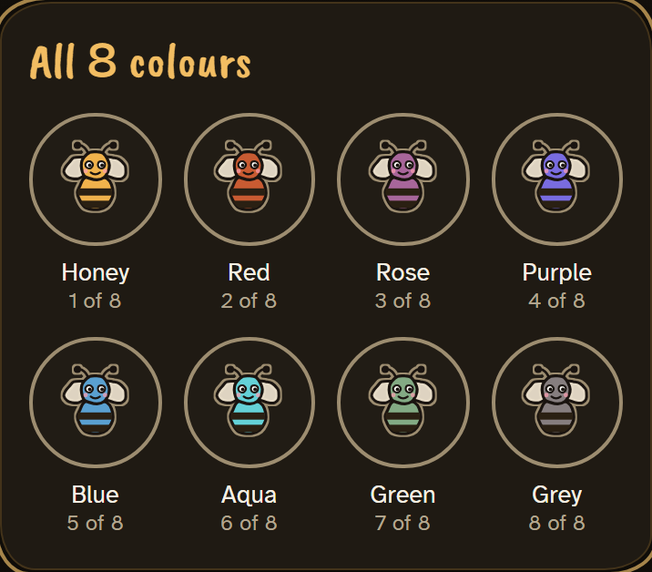
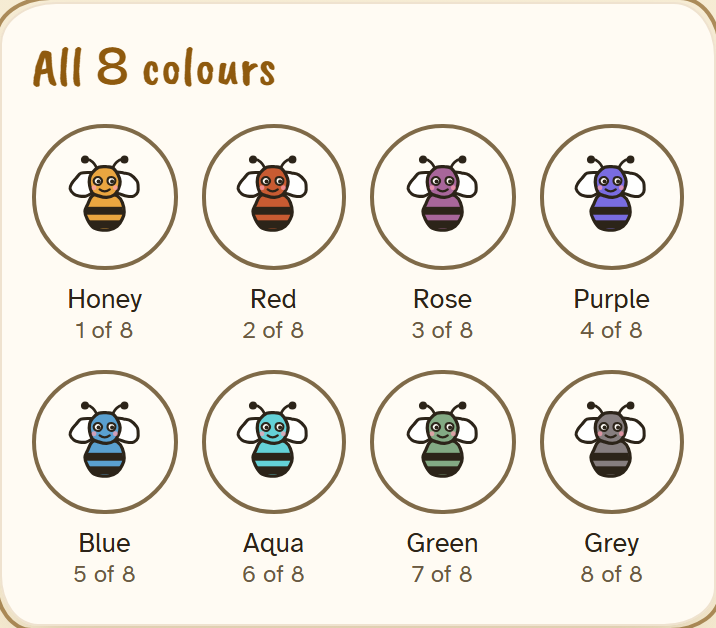
On the small tokens: lobby, waiting room, scoreboard
In the dark theme every token draws a 1 px sticker edge (--av-halo), the contrast fix below.
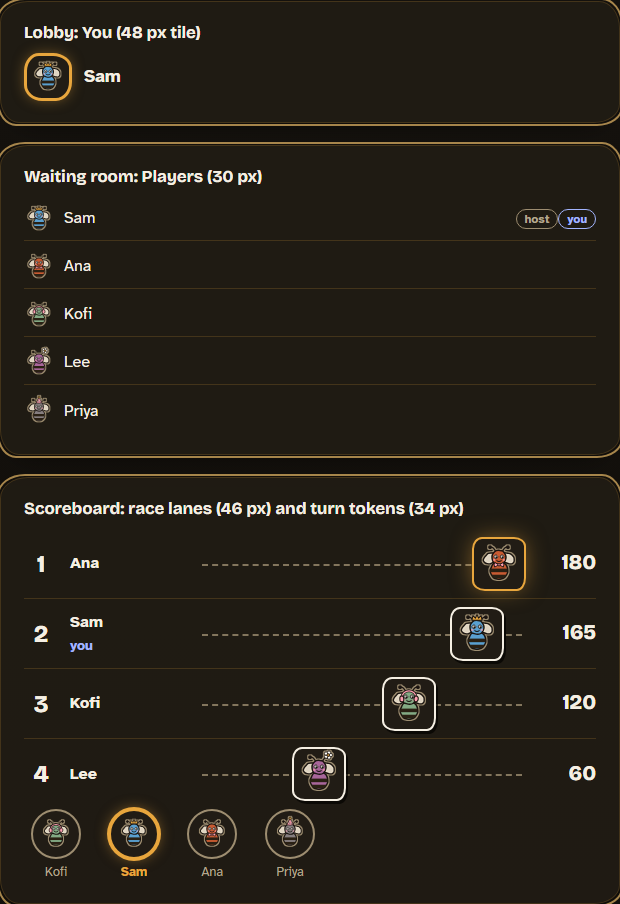
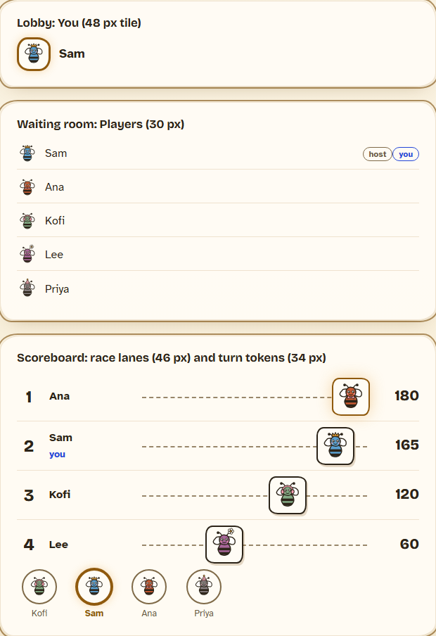
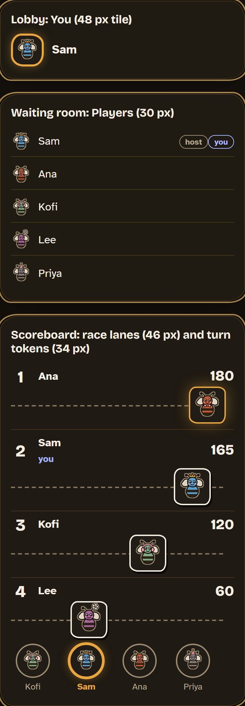
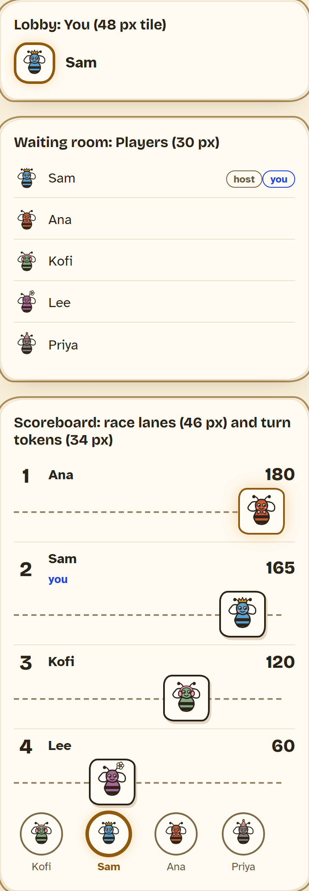
Contrast: all 64 combinations, both sets, both themes
First run: 128 failures, every dark-theme avatar including the mascot's own colours (worst 1.06:1).
The cocoa stripes run into the cocoa outline, and on a dark panel that stretch of edge disappears. No disc colour
can fix it (it would need to be lighter than the outline and darker than every body at once).
Fix: a 1 px sticker edge on dark-theme tokens (--av-halo #9d8d70, an SVG dilate filter), which
leaves the drawing and the mascot untouched. After: 0 failures; every dark avatar's edge is 4.27:1 at its
worst (the honeycomb's peak), every light one 14.32:1.
Full tables: contrast.md (after), contrast-before.md,
or run it live.
Existing avatars: how the old keys map
Proposed backfill (old key → colour, cosmetic) for each set. The old client keeps writing the key; a sync trigger derives the parts. A new client writes the parts, and the trigger derives the nearest key so old clients still draw something sensible. Details in the README.